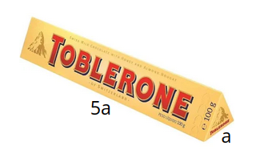
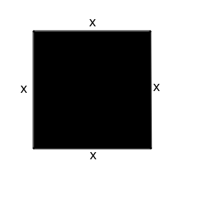
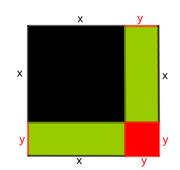
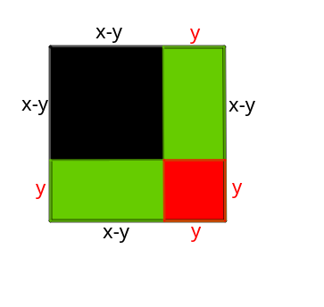
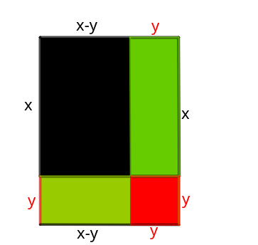

Para estudarmos um novo tipo de padrão de função, vamos considerar um experimento físico chamado queda livre, um movimento vertical que consiste na queda dos corpos sem o efeito da força de atrito.
Observe a imagem:
Figura1.1.Queda livre: Instante e Posição da Bola de Basquete
Observamos na imagem acima que a cada segundo que passa a bola de tênis percorre uma distância maior em direção ao solo. Ao observar a situação através de uma tabela, nota-se que a distância percorrida não é uma função linear do tempo.
Tabela1.2.Queda Livre: Dados da Figura 1.1
Tempo\((s)\)
Distância\((m)\)
0
0
1
1
2
4
3
9
Se a situação mencionada na Figura 1.1 fosse uma situação linear, veríamos que a bola iria percorrer a mesma distância em qualquer segundo, ou seja, para cada segundo que a bola cai, a distância aumenta n vezes, o que não acontece na Tabela 1.2.
Assim, podemos concluir que a Tabela 1.2 é uma situação não linear. Será que conseguiríamos incluir mais linhas na tabela observando a queda da bola no decorrer do tempo? Vamos fazer isto?
Tabela1.4.Queda Livre: Dados da Figura 1.1, situação não linear
Tempo\((s)\)
Distância\((m)\)
1
1
2
4
3
9
4
?
5
?
6
?
...
...
Clique em solução para ver se você conseguiu acertar os valores da tabela.
Solução.
Tabela1.5.Queda Livre: Dados da Figura 1.1 com novos valores inseridos
Tempo\((s)\)
Distância\((m)\)
1
1
2
4
3
9
4
16
5
25
6
36
...
...
E assim conseguimos inserir novas linhas e completar seus valores seguindo o mesmo padrão das linhas anteriores. Portanto, observamos que em algumas situações cotidianas, enquanto o tempo aumenta linearmente, ou seja, de um em um segundo, a distância aumenta de forma diferente (não linear).
Atividades
Observe as imagens e reconheça qual delas representa uma situação estudada no capítulo.
Figura1.6.Homem pulando de paraquedas
Figura1.7.Homem jogando boliche
Solução.
A Figura 1.6 representa queda livre, estudada no capítulo.
Identifique qual situação a seguir é não linear.
(a)
Tabela1.8.Um corpo próximo da superfície terrestre, sujeito à aceleração da gravidade de 10 \(m/s^2\text{,}\) é abandonado e depois de 5 segundos atinge o solo.
Tempo\((s)\)
Altura\((m)\)
0
125
1
120
2
105
3
80
4
45
5
0
(b)
Tabela1.9.Na produção de peças, uma fábrica tem um custo fixo de R$ 15,00 mais um custo variável de R$ 2,00 por unidade produzida.
Unidade
Custo\((R$)\)
1
17
2
19
3
21
4
23
5
25
(c)
Tabela1.10.O salário bruto mensal do vendedor de uma loja é composto por um valor fixo de R$1.400,00 e mais 10% do valor total das vendas do mês.
Vendas\((R$)\)
Salário\((R$)\)
100
1410
200
1420
300
1430
400
1440
500
1450
(d)
Tabela1.11.O perímetro de um quadrado é igual ao quádruplo da medida de seu lado.
As outras alternativas é de fácil percepção, pois aumentam linearmente. No caso da alternativa (b), a cada unidade vendida o custo aumenta 2 reais. Na alternativa (c), a cada aumento de 100 reais nas vendas, aumentam-se 10 reais no salário. E na alternativa (d), a cada centímetro de aumento no lado do quadrado, o perímetro aumenta 4 centímetros.
Localize qual das situações a seguir é linear.
O preço do tomate em um supermercado é R$ 5,89/kg.
Um poupador deposita \(R$2800,00\) em uma aplicação bancária que credita mensalmente do saldo, a título de juros, em seu nome mensalmente
Um posto de combustível vende 10.000 litros de álcool por dia a R$1,50 cada litro. Seu proprietário percebeu que, para cada centavo de desconto que concedia por litro, eram vendidos 100 litros a mais por dia. Por exemplo, no dia em que o preço do álcool foi R$ 1,48, foram vendidos 10.200 litros
Calcular o saldo ao final de 12 meses quando a quantia de R$ 1200,00 foi aplicada durante 6 anos em uma instituição bancária a uma taxa de 1,5% ao mês, no sistema de juros compostos.
Para calcular o pH do sangue dos seres humanos pode-se utilizar a fórmula de Henderson-Hasselbach, dada por \(pH=6,1+log(\dfrac{B}{C})\text{,}\) em que B representa a concentração de bicarbonato e C representa a concentração de ácido carbônico.
Solução.
Alternativa a. Se o preço do quilo do tomate é R$5,89, então preço a pagar e quilo do tomate variam proporcionalmente e linearmente. Portanto, uma situação linear.
Observe a relação feita nos diagramas e julgue se é uma situação linear ou não linear.
Figura1.12.
() Situação Linear
() Situação Não Linear
Figura1.13.
() Situação Linear
() Situação Não Linear
Figura1.14.
() Situação Linear
() Situação Não Linear
Solução.
Figura1.15.
() Situação Linear
(X) Situação Não Linear
Figura1.16.
() Situação Linear
(X) Situação Não Linear
Figura1.17.
(X) Situação Linear
() Situação Não Linear
Leia e analise a tabela cuja situação ilustra um paraquedista em queda livre que levaria 10 segundos para chegar ao chão caso não abra o paraquedas. Ele salta do topo do 10° maior prédio do mundo, o Taipei 101, localizado na Tailândia. Relacionando tempo e distância, explique porque esta situação é não linear.
Tabela1.18.Paraquedista em queda livre
t\((s)\)
h\((m)\)
0
500
1
495
2
480
3
455
4
420
5
375
6
320
7
255
8
180
9
95
10
0
Fonte: [4.1]Figura1.19.Taipei 101, arranha-céu de 101 andares, localizado em Taipei, Taiwan.
Solução.
Se fosse uma situação linear, então o paraquedista estaria na altura 490 metros aos 2 segundos, o que não ocorre. Portanto, a situação é não linear
Associe as duas colunas quanto às observações de situações lineares e não lineares:
Linear
Não Linear
Tabela1.20.(Situação )
x
y
1
4
2
7
3
10
4
13
Tabela1.21.(Situação )
x
y
1
4
2
7
3
12
4
19
Tabela1.22.(Situação )
x
y
1
2
2
1
3
0
4
-1
Tabela1.23.(Situação )
x
y
1
10
2
40
3
90
4
160
Solução.
A sequência correta é A,B,A,B.
Calcule as informaçoes que estão escondidas pela figura e que estão faltando nas tabelas a seguir.
Tabela1.24.
x
y
1
0
2
3
8
4
15
5
Solução.
Tabela1.25.
x
y
1
0
2
3
3
8
4
15
5
24
Tabela1.26.
x
y
1
2
2
8
3
18
24,5
4
32
50
Do alto de um obelisco construído no centro histórico de uma certa cidade, um operário deixa cair seu capacete. Observe a imagem, elabore uma tabela que tenha duas colunas, a primeira mostrando os segundos do momento em que o capacete sai da cabeça do operário até o momento em que toca o solo, e na segunda coluna, a altura do capacete em relação ao solo.
Figura1.28.Homem no alto de um obelisco deixa cair capacete (EPI de segurança)
Solução.
Tabela1.29.Obelisco
Segundo\((s)\)
Altura\((m)\)
0
91
1
90
2
86
3
77
4
61
5
36
6
0
DESAFIO Para evitar uma epidemia, a Secretaria de Saúde de uma cidade dedetizou todos os bairros, de modo a evitar a proliferação do mosquito da dengue. Sabe-se que o número f de infectados é dado por uma determinada função f(t) em que t é expresso em dia e t = 0 é o dia anterior à primeira infecção e além disso, tal expressão é válida para os 60 primeiros dias da epidemia. A Secretaria de Saúde decidiu que uma segunda dedetização deveria ser feita no dia em que o número de infectados chegasse à marca de 1600 pessoas, e uma segunda dedetização precisou acontecer. Utilize os valores da tabela para determinar em que dia a detetização acontecerá.
Tabela1.30.Número de infectados em determinado dia t
Vamos criar mais uma coluna mostrando a diferença dos valores da segunda coluna
Tabela1.31.Número de infectados em determinado dia t
t
f(t)
diferença
10
1000
-
11
1078
1078-1000=78
12
1152
1152-1078=74
13
1222
1222-1152=70
14
1288
1288-1222=66
15
1350
1350-1288=62
16
1408
1408-1350=58
17
1462
1488-1462=54
18
1512
1558-1512=50
19
1558
1600-1558=46
20
1600
1638-1600=38
Portanto, no 20º dia, 1600 pessoas foram infectadas
Invente um exercício que traz uma situação não linear, mas que mantenha um padrão como a do exercício anterior.
Subseção1.2Análise e conjectura
Analisando a situação mostrada no subcapítulo anterior da queda livre, vamos comparar as duas tabelas e obsevar que a mesma pode ser escrita usando potênciação na segunda coluna. Veja:
Tabela1.32.Queda Livre: Distâncias da Tabela 1.5 escritas na forma de potência
Conseguiu perceber a relação existente entre tempo e distãncia? Caso não tenha conseguido, note que a distância percorrida pela bola é igual ao quadrado do tempo (ou tempo elevado ao quadrado).
Neste momento já podemos criar uma linha usando apenas letras e números, chamadas de expressões algébricas, fórmulas que representem de modo geral o que está acontecendo. Podemos então conjecturar (deduzir) estas fórmulas. Observe:
Tabela1.33.Queda Livre: Conjectura da situação não linear mostrada na Figura 1.1
Tempo\((s)\)
Distância\((m)\)
1
1²
2
2²
3
3²
4
4²
5
5²
6
6²
...
...
x
x²
Assim, generalizamos com uma relação de dependência (distância dependendo do tempo) chamada função, podendo determinar para qualquer tempo, a distância percorrida pela bola. Logo, nossa função tem a fórmula \(x \rightarrow x^2 \) ou \(y=x^2\text{.}\)
Por exemplo, se o tempo é de 20 segundos, então a distância será \(20^2=400 m\text{.}\)
Um outro exemplo que podemos citar é a partir de uma imagem que ilustra áreas.
Esta imagem mostra uma sequência de três imagens que seguem um padrão quadrático. Para entender melhor, veja a tabela que mostra a primeira linha enumerando as figuras e a segunda linha mostrando a quantidade de quadrados de 1 por 1 (1x1) unidade.
Tabela1.35.Sequência de Blocos: Número da Figura pela Quantidade de Quadrados
Figura
1
2
3
Quantidade de quadrados
5
8
13
Então, podemos escrever os valores da segunda linha de outra maneira:
Tabela1.36.Sequência de Blocos: Número da Figura pela Quantidade de Quadrados Escrita na Forma de Potência
Figura
1
2
3
Quantidade de quadrados
\(1^2+4\)
\(2^2+4\)
\(3^2+4\)
Note que os mesmos números da primeira linha aparecem na segunda, nos dando a possibilidade de criar uma fórmula para associar figura e quantidade de quadrados.
Tabela1.37.Sequência de Blocos: Quantidade de Quadrados em Função do Número da Figura
\(f\)
1
2
3
\(f^2+4\)
\(1^2+4\)
\(2^2+4\)
\(3^2+4\)
Portanto, a quantidade de quadrados é dada pela fórmula \(f\rightarrow f^2+4\) ou \(q=f^2+4\text{.}\)
Atividades
Reconheça qual das fórmulas da primeira coluna representa a situação mostrada na tabela.
\(\displaystyle y=x^2+x\)
\(\displaystyle y=x^2+2x\)
\(\displaystyle y=2x^2-x\)
\(\displaystyle y=3x^2\)
\(\displaystyle y=-x^2+4x\)
Tabela1.38.
x
y
1
3
2
8
3
15
4
24
5
35
Solução.
Alternativa b, \(y=x^2+2x\)
Tabela1.39.
x
y
1
\(1^2+2\cdot1=1+2=3\)
2
\(2^2+2\cdot2=4+4=8\)
3
\(3^2+2\cdot3=9+6=15\)
4
\(4^2+2\cdot4=16+8=24\)
5
\(5^2+2\cdot5=25+10=35\)
Identifique qual das tabelas mostra a fórmula \(y=5x^2\text{.}\)
Tabela1.40.
x
y
1
3
2
12
3
27
4
48
5
75
Tabela1.41.
x
y
1
4
2
16
3
54
4
64
5
100
Tabela1.42.
x
y
1
5
2
20
3
45
4
80
5
125
Tabela1.43.
x
y
1
6
2
9
3
14
4
21
5
30
Solução.
Tabela1.44.
x
y
1
\(5\cdot1^2=5\cdot1=5\)
2
\(5\cdot2^2=5\cdot4=20\)
3
\(5\cdot3^2=5\cdot9=45\)
4
\(5\cdot4^2=5\cdot16=80\)
5
\(5\cdot5^2=5\cdot25=125\)
Localize, dentre as situações mencionadas nas alternativas, a que melhor representa a tabela a seguir:
Tabela1.45.
x
0
1
2
3
4
5
y
0
9
16
21
24
25
A área de um retângulo cujo perímetro é 10.
O lucro de uma companhia de viajens cuja fórmula é calculada por \(y=1500+10x-x^2\)
O lançamento de um dardo que inicia no tempo igual a zero e é dado pela fórmula \(y=10x-2x^2\)
O produto de dois números, cuja soma é 10, sendo x um dos números y o produto dos dois.
Solução.
A soma de dois números é dada por: \(x+y=10\)
Logo, \(y=10-x\)
Assim, \(P=x\cdot y=x\cdot(10-x)=10x-x^2\)
Segue que
Para x=0, \(y=10\cdot0-0^2=0-0=0\)
Para x=1, \(y=10\cdot1-1^2=10-1=9\)
Para x=2, \(y=10\cdot2-2^2=20-4=16\)
Para x=3, \(y=10\cdot3-3^2=30-9=21\)
Para x=4, \(y=10\cdot4-4^2=40-16=24\)
Para x=5, \(y=10\cdot5-5^2=50-25=25\)
Portanto, alternativa d.
Um matemático anotou em uma tabela alguns pontos importantes da trajetória de uma bola durante um jogo. Chegou na fórmula \(y=-x^2+5x\text{.}\) Sendo o \(x\) os instantes em segundos e \(y\) a altura da bola, utilize a fórmula encontrada pelo matemático e complete a tabela:
Fonte: [4.4]Figura1.46.Lançamento oblíquo e o futebol
x
y
0
1
2
3
4
5
Tabela1.47.Altura da Bola em Função do Tempo
Solução.
Tabela1.48.Altura da Bola em Função do Tempo: Cálculos
x
y
0
\(-\cdot0^2+5\cdot0=0\)
1
\(-\cdot1^2+5\cdot1=-1+5=4\)
2
\(-\cdot2^2+5\cdot2=-4+10=6\)
3
\(-\cdot3^2+5\cdot3=-9+15=6\)
4
\(-\cdot4^2+5\cdot4=-16+20=4\)
5
\(-\cdot5^2+5\cdot5=-25+25=0\)
Observe a tabela construída utilizando a fórmula \(y=x^2+4\) modifique os valores de x e encontre novos valores para y.
Tabela1.49.\(y=x^2+4\)
x
y
0
4
1
5
2
8
3
13
4
20
Tabela1.50.\(y=x^2+4\)
x
y
Dada a fórmula \(h=5t^2\text{,}\) complete a tabela calculando os valores de t tendo disponíveis os valores de h.
Tabela1.51.\(h=5t^2\)
t
h
320
405
500
605
720
Solução.
Para t=8, \(h=5\cdot8^2=5\cdot64=320\)
Para t=9, \(h=5\cdot9^2=5\cdot81=405\)
Para t=10, \(h=5\cdot10^2=5\cdot100=500\)
Para t=11, \(h=5\cdot11^2=5\cdot121=605\)
Para t=12, \(h=5\cdot12^2=5\cdot144=720\)
Portanto, completando a tabela com os valores de t:
Tabela1.52.
t
8
9
10
11
12
h
320
405
500
605
720
Compare as fórmulas e explique qual delas representa o número de quadradinhos na figura 1.55, com x=1,2,3, ...
Desafio Analise as tabelas e elabore uma fórmula para cada situação.
(a)
Tabela1.54.Situação(1)
1
2
2
5
3
10
4
17
...
...
?
?
Solução.
Tabela1.55.Situação(1)
1
2
2
5
3
10
4
17
...
...
\(x\)
\(x^2+1\)
(b)
Tabela1.56.Situação(2)
1
3
2
12
3
27
4
48
...
...
?
?
Solução.
Tabela1.57.Situação(2)
1
3
2
12
3
27
4
48
...
...
\(x\)
\(3x^2\)
(c)
Tabela1.58.Situação(3)
1
1
2
7
3
17
4
31
...
...
?
?
Solução.
Tabela1.59.Situação(3)
1
1
2
7
3
17
4
31
...
...
\(x\)
\(2x^2-1\)
(d)
Tabela1.60.Situação(4)
1
\(\dfrac{1}{2}\)
2
2
3
\(\dfrac{9}{2}\)
4
8
...
...
?
?
Solução.
Tabela1.61.Situação(4)
1
\(\dfrac{1}{2}\)
2
2
3
\(\dfrac{9}{2}\)
4
8
...
...
\(x\)
\(\dfrac{x^2}{2}\)
Desafio Observe a ilustração, crie uma tabela indicando, na figura 1.64, x=1,2,3,..., a largura e a altura do retângulo (em quadradinhos) e o número total de quadradinhos na figura. Em seguida, escreva uma fórmula que, para cada x, dê o número total de quadradinhos.
Fonte: [4.3]Figura1.62.Sequência Especial de Blocos
Solução.
Tabela1.63.Sequência Especial de Blocos
Figura
Quadrados
1
1²+1
2
2²+2
3
3²+3
4
4²+4
5
5²+5
6
6²+6
...
...
x
\(x²+x\)
Invente uma situação envolvendo duas variáveis \(x\) e \(y\text{,}\) e uma função quadrática que dá \(y\) em função de \(x\text{.}\) Em seguida escreva uma tabela com alguns valores para \(x\) e os respectivos valores para \(y\text{.}\)
Subseção1.3Conjectura na geometria
No estudo de funções do segundo grau, ou funções quadráticas, as áreas são uma importante aplicação. Você já pensou o que acontece com a área de um triângulo quando variamos sua base e a sua altura ao mesmo tempo? Observe o quadro a seguir e mexendo nos vértices do triângulo, tente chegar a uma conclusão.
Figura1.64.Área do Triângulo ABC Interativo
Pensaremos em duas situações. A primeira, fixando a base do triângulo ABC e variando a sua altura. A segunda, variando base e altura do mesmo triângulo ABC.
Área do Triângulo ABC (Base Fixa)
Fixando a base do triângulo em um valor igual a 4, e em seguida, tabelar, em três colunas, os valores de altura e área.
Base
Altura
Área
4
1
2
4
2
4
4
3
6
4
4
8
4
5
10
4
6
12
...
...
4
\(x\)
\(2x\)
Tabela1.65.Área do Triângulo ABC (Base Fixa)
Figura1.66.Área do Triângulo ABC Interativo
Área do Triângulo ABC (Base e altura variando)
Agora variando a base e altura do triângulo e observando os valores da área.
Base
Altura
Área
1
1
0,5
2
2
2
3
3
4,5
4
4
8
5
5
12,5
6
6
18
...
...
x
\(x\)
\(\dfrac{x^2}{2}\)
Tabela1.67.Área do Triângulo ABC
Figura1.68.Área do Triângulo ABC Interativo
Note por análise das tabelas que quando fixamos o valor da base, é gerado uma função linear. Já quando se variam base e altura, gera-se uma função quadrática.
Hora de praticar com as atividades propostas a conjecturação de fórmulas para o calculo de áreas.
Atividades
Identifique qual das alternativas representa o cálculo da área do triângulo ABC
Figura1.69.Triângulo Isósceles ABC, de Altura Igual a 4 e Base Igual a 6
\(A=\dfrac{3\cdot4}{2}=\dfrac{12}{2}=6\) cm²
\(A=\dfrac{3\cdot5}{2}=\dfrac{15}{2}=7,5\) cm²
\(A=\dfrac{6\cdot4}{2}=\dfrac{24}{2}=12\) cm²
\(A=\dfrac{6\cdot5}{2}=\dfrac{30}{2}=15\) cm²
Solução.
\(A=\dfrac{6\cdot4}{2}=\dfrac{24}{2}=12\) cm²
Localize qual das figuras geométricas possui área igual a \(96\) m².
Figura1.70.Quadrado
Figura1.71.Retângulo
Figura1.72.Triângulo
Figura1.73.Trapézio
Solução.
Figura 1.72 Triângulo: \(A=\dfrac{B\cdot h}{2}=\dfrac{16\cdot 12}{2}=\dfrac{192}{2}=96 m^2\)
Descreva como seria a fórmula que representa a área do triângulo DEF.
Para enxergar melhor a superfície do cubo, aumente o valor de i no recurso interativo do Geogebra.
Figura1.81.Recurso Interativo Geogebra: Planificação do Cubo
Solução.
\(A=6\cdot(3x)^2=6\cdot9x^2=54x^2\)
Utilize a fórmula da área total do cubo do exercício anterior para determinar os valores das áreas quando:
\(\displaystyle x=1\)
\(\displaystyle x=2\)
\(\displaystyle x=\dfrac{3}{2}\)
\(\displaystyle x=2,5\)
\(\displaystyle x=\sqrt5\)
Solução.
a. \(A=54\cdot1^2=54\cdot1=54\)
b. \(A=54\cdot2^2=54\cdot4=216\)
c. \(A=54\cdot\left(\dfrac{3}{2}\right)^2=54\cdot\dfrac{9}{4}=121,5\)
d. \(A=54\cdot2,5^2=54\cdot6,25=337,5\)
e. \(A=54\cdot(\sqrt5)^2=54\cdot5=270\)
Desafio Calcule a área lateral do sólido ABCDEFG em função da variável \(x\text{:}\)
Figura1.82.Sólido ABCDEFG: Prisma de Base QuadradaSolução.
\(A=2\cdot(2x+3)^2+2\cdot(2x+3)\cdot(2x+1)\)
\(=2\cdot(4x^2+12x+9)+2\cdot(4x^2+8x+3)\)
\(=8x^2+24x+18+8x^2+16x+6\)
\(=16x^2+40x+24.\)
O chocolate Toblerone é vendido numa embalagem cujo nome é prisma triangular. Sabendo que a medida da aresta da base é a e a altura é 5a, selecione a alternativa que mostra a forma correta de calcular a área total da embalagem.
Dica1.Dica2.

Fonte: [4.5]Figura1.83.Chocolate Toblerone: Prisma de Base Triângular
Desafio Compare as áreas sobreadas a seguir e selecione qual das figuras tem maior área. Figura1.84.Comparação da Área do Trapézio com a Área do Retângulo SombreadoSolução.
Figura 1:
\(A=\dfrac{(x+5+x+1)\cdot (x+6)}{2}\)
\(=\dfrac{(2x+6)\cdot (x+6)}{2}\)
\(=\dfrac{2x^2+18x+36}{2}\)
\(=x^2+9x+18\)
Figura 2:
\(A=(x+6)\cdot (x+4)-2^2\)
\(=(x^2+4x+6x+24)-4\)
\(=x^2+10x+20\)
Portanto, a Figura 2 tem maior área.
Subseção1.4Calculando áreas em diversos cenários
Quando trabalhamos com funções quadráticas, nos deparamos com exercícios que apresentam produtos notáveis, principalmente quando se aplica a problemas de áreas.
Como foi observado na Tabela 1.67, o termo quadrático aparece quando aumentamos ao mesmo tempo as medidas da base e da altura do triângulo.
Em um retângulo de altura x e base 2x, teremos o cálculo de sua área da seguinte maneira:
\begin{align*}
A = \amp x\cdot2x\\
A = \amp 2x^2
\end{align*}
Se aumentarmos a altura do triângulo em uma unidade, teremos:
\begin{align*}
A = \amp (x+1)\cdot2x\\
A = \amp 2x^2+2x
\end{align*}
Agora, se aumentarmos a base e a altura, simultânemente, teremos:
\begin{align*}
A = \amp (x+1)\cdot(2x+1)\\
A = \amp 2x^2+x+2x+1 \\
A = \amp 2x^2+3x+1
\end{align*}
Para cada termo que aumentamos nos lados do retângulo, mais um termo é adicionado na área do polígono.
Agora vamos pensar num quadrado.
\begin{align*}
A = \amp x \cdot x \\
A = \amp x^2
\end{align*}

\begin{align*}
A = \amp (x+y) \cdot (x+y)\\
A = \amp (x+y)^2\\
A = \amp x^2+2xy+y^2
\end{align*}
, um polinômio de três termos.

\begin{align*}
A = \amp (x-y) \cdot (x-y)\\
A = \amp (x-y)^2\\
A = \amp x^2-2xy+y^2\text{,}
\end{align*}
novamente um polinômio de três termos.

\begin{align*}
A = \amp (x-y) \cdot (x+y)\\
A = \amp x^2-y^2
\end{align*}
, um polinômio de dois termos.

Portanto, seguem os produtos notáveis:
Produto da Soma Pela Diferença:\((a+b)\cdot(a-b)=a^2-b^2\)
Quadrado da Soma:\((a+b)^2=a^2+2ab+b^2\)
Quadrado da Diferença:\((a-b)^2=a^2-2ab+b^2\)
Veja o vídeo explicativo a seguir que trata sobre o Produtos Notáveis: Fonte: [4.13]
Atividades
Desenvolva os dos produtos notáveis:
\(\displaystyle (3x-1)^2\)
\(\displaystyle (2m+\dfrac{3}{4})^2\)
\(\displaystyle (10-ab^4)\cdot(10+ab^4)\)
Solução.
Exemplo 1 a. \((3x)^2-2\cdot3x\cdot1+1 = 9x^2-6x+1\)
Exemplo 1 b. \((2m)^2+2\cdot2m\cdot\dfrac{3}{4}+\dfrac{3}{4} = 4m^2+3m+\dfrac{3}{4}\)
Exemplo 1 c. \(10^2-(ab^4)^2 = 100-a^2b^8\)
Explique como se fatoram as seguintes expressões:
\(\displaystyle x^2-4\)
\(\displaystyle 4x^2–20x+25\)
\(\displaystyle 25m^2+20m+4\)
Solução.
Exemplo 2 a. \(x^2-2^2=(x-2)\cdot(x+2)\)
Exemplo 2 b. \((2x)^2-2\cdot2x\cdot5+5^2=(2x-5)^2\)
Exemplo 2 c. \((5m)^2+2\cdot5m\cdot2+2^2=(5m+2)^2\)
Uma caixa d’água tem a forma de paralelepípedo reto-retângulo, cujas medidas internas são, em metros, x, 20 – x e 2. Explique como encontrar a expressão da área total deste sólido e siga a sua explicação para encontrar a expressão pedida.
No quadro a seguir, estão representados um hexágono regular alguns triângulos equiláteros. Modifique as posições dos triângulos, mostrando que a área de um hexágono regular é 6 vezes a área de um triângulo equilátero, ou seja,
Demonstre como determinar a área total do cubo de lado 2x+1. Figura1.87.Cubo de lado 2x-1
Solução.
A área total será calculada pela soma das áreas das faces do do cubo:
\(A=6\cdot(2x-1)^2\)
\(A=6\cdot((2x)^2-2\cdot 2x\cdot1+1)\)
\(A=6\cdot((4x^2-4x+1)\)
\(A=24x^2-24x+4\)
Uma folha retangular de cartolina tem comprimento 18 cm e largura 10 cm. Recortam-se dessa folha quadrados congruentes em cada um dos cantos dessa folha, como na figura, formando-se uma superfície aberta de um paralelepípedo reto-retângulo:
Fonte: [4.7]Figura1.88.Etapas da atividade de transformar a forma retangular de cartolina em um paralelepípedo reto-retângulo aberto
Encontre uma fórmula para a área da superfície desse paralelepipedo reto-retângulo em função do lado "l" dos quadrados dos cantos.
Portanto, para x=0, a área da superfície é 180, a maior possível e para x=6,7, a área da superfície é 0,44, a menor possível.
Um fazendeiro vende leite em uma embalagem de papelão que tem a forma de um prisma reto de base quadrada, com dimensões 10 cm, 10 cm e 12 cm. Ele pretende vender outro tipo de leite numa nova embalagem, que tem a forma de um prisma reto, cuja base é um triângulo equilátero de 30 cm de perímetro. Compare as áreas das embalagens e indique se o fazendeiro deve ou não trocar de embalagem, sabendo que ele quer manter o mesmo volume de leite. (Considere \(\sqrt3=1,7\))
Fonte: [4.8]Figura1.89.Embalagens de caixas de leite. Prisma Reto de Base Quadrada e Primas Reto de Base Triangular, respectivamente.Solução.
Para manter a mesmo volume das embalagens, faremos uma igualdade de volumes. Assim, encontramos o valor da altura do prisma de base triangular que o enuncido não fornece. Logo,chamando de \(V_1\) o volume do prisma de base quadrada e de \(V_2\) o volume do prisma de base triangular, temos:
Após encontrar o valor da altura do prisma de base triangular, vamos às áreas totais e descobrir qual embalagem gasta mais papel. Usando os mesmos índices do cálculo do volume, temos:
Portanto, o fazendeiro não deve trocar a embalagem, pois gastará mais papelão na embalagem em forma de prisma de base triangular.
Selecione qual das fórmulas a seguir é a que corresponde à área lateral da embalagem de perfume abaixo. Em seguida, determine qual a área lateral desta embalagem se a medida do diâmetro for igual a 10 cm.
Figura1.90.Aparência da embalagem de perfume e suas dimensões, ou seja, diâmetro da base igual a \(2x\) e altura igual a \(3x\text{.}\)
Observe o exemplo e demonstre como encontrar os pontos de uma função dada pela fórmula \(y=2x-x^2\text{,}\) no plano cartesiano. Para os valores de x, use os valores inteiros de -4 a 2.
Exemplo1.91.
Dada uma função quadrática cuja fórmula é \(y=4x-x^2\text{,}\) acharemos os pontos atribuindo valores a x e usando a fórmula, vamos determinar os valores de y. Vamos usar para os valores de x, os inteiros -1 a 5.
Dada uma função quadrática cuja fórmula é \(y=2x+x^2\text{,}\) acharemos os pontos atribuindo valores a x e usando a fórmula, vamos determinar os valores de y.
Investigue qual das funções possui menor valor de y quando x=3.
\(y=-x^2+6x\)
ou
\(y=-x^2+6x+1\)
Solução.
Para \(y=-x^2+6x\text{,}\) temos que \(y=-3^2+6\cdot3=-9+18=9\text{.}\)
Para \(y=-x^2+6x+1\text{,}\) temos que \(y=-3^2+6\cdot3+1=-9+18+1=10\text{.}\)
Portanto, a segunda função possui y maior para x=10.
Subseção1.5Reconhecendo funções quadráticas
As funções quadráticas possuem várias aplicações. Vamos comparar suas aplicações com outras funções.
Exemplo 1: Mário pretende aproveitar uma área já existente em seu sítio para a construção de um cercado que servirá, posteriormente, um viveiro para pássaros. Ele usará um muro já existente para construir este cercado em formato retangular conforme ilustra a figura a seguir.
Considere que Mário usará exatamente de 100 metros de tela para a construção do cercado, logo a expressão que representa a área do cercado em termos de sua largura 𝒍 é:
Com exceção do muro, temos que duas vezes a largura mais o comprimento do terreno onde não está o muro é igual aos 100 metros de tela. Logo, c+2l=100. Isolando c na equação anterior e substituindo na área do cercado, temos que \(A=c \cdot l=(100-2l)\cdot l=100l-2l^2\text{.}\) Portanto, alternativa c, um caso de função quadrática.
Exemplo 2 Um prefeito quer construir uma praça quadrada de 10 m de lado, que terá quatro canteiros triangulares de pedra e um canteiro quadrado de grama, como na figura. O prefeito ainda não decidiu qual será a área do canteiro de grama, e por isso o comprimento do segmento AB está indicado por x na figura.
Com estas informações,
Sabendo que o canteiro de grama é quadrado, calcule a área dele para x = 2.
Escreva a expressão da área do canteiro de grama em função de x.
Para produzir 10 unidades, consideraremos x=10. Logo,
\(C(10)=2\cdot(10)^2-100\cdot(10)+5000\)
\(=200-1000+5000\)
\(=4200\) reais.
O valor R$ 3950,00 acontecerá para duas quantidade produzidas: 15 e 35 unidades. Note:
\(C(10)=2\cdot(15)^2-100\cdot(15)+5000\)
\(=450-1500+5000\)
\(=3950\) reais.
ou
\(C(10)=2\cdot(35)^2-100\cdot(35)+5000\)
\(=2450-3500+5000\)
\(=3950\)
Após analisar e reconhecer uma função quadrática nos exercícios demonstrados, vamos resolver as atividades a seguir.
Atividades
Relembre do que foi estudado sobre função quadrática e indique qual situação é um exemplo de aplicação de função quadrática.
O valor da corrida de taxi, em uma determinada cidade, cuja corrida vale R$5,50 mais R$2,50 por quilômetro rodado. Fonte: [4.14]Figura1.93.Mostorista acionando o taxímetro para iniciar a corrida.
O total de bactérias por mililitro, em uma determinada colônia de bactérias, cuja amostra de 10 000 bactérias por ml, após um tempo x, triplica a cada meia hora. Fonte: [4.15]Figura1.94.Microbiologista observa amostra de bactérias na Placa de Petri, instrumento para análises de laboratórios.
Homem lançando um objeto do alto de uma torre, e observando a relação de tempo e espaço percorrido pelo objeto. Fonte: [4.16]Figura1.95.Experimento de Galileu Galilei: Queda livre
O valor V, em reais, de um caminhão adquirido por R$ 100.000,00, t anos após sua compra, sabendo que todo ano a taxa de depreciação é de 20%. Fonte: [cross-reference to target(s) "ref-17" missing or not unique]Figura1.96.Frota de caminhões enfileirados
Solução.
Alternativa c. Queda livre é estudado no início do capítulo como uma aplicação de função quadrática.
Foram feitas três medições da temperatura de um paciente, a intervalos de 1h, cujos resultados, em ordem, foram 37 ºC, 40,5 ºC e 39 ºC. Nesse período, a temperatura variou como uma função do 2º grau, e consideramos para a primeira medição t=0. Indique a função que relaciona a temperatura T, em ºC, desse paciente t horas após a primeira medição.
\(\displaystyle T(t)=-1,5t^2+8t+37\)
\(\displaystyle T(t)=0,5t^2+12t+39\)
\(\displaystyle T(t)=-2,5t^2+6t+37\)
\(\displaystyle T(t)=-1,5t^2+4t+39\)
\(\displaystyle T(t)=-0,5t^2+2t+40,5\)
Solução.
Alternativa c, pois
\(T(0)=-2,5\cdot0^2+6\cdot0+37=0+0+37=37\)
\(T(1)=-2,5\cdot1^2+6\cdot1+37=-2,5+6+37=40,5\)
\(T(2)=-2,5\cdot2^2+6\cdot2+37=-10+12+37=39\)
Um jogador de basquete lança uma bola cuja trajetória aparece na imagem, com as alturas anotadas a cada segundo. Adotando A como altura e s como segundo, localize qual das fórmulas determina as alturas mostradas na imagem.
Figura1.97.
Exemplo1.98.
Supondo a fórmula \(A=-2s^2+2s+4\text{,}\) vamos verificar se esta fórmula gera as alturas da figura.
Logo, sendo \(s=0\) o momento da bola nas mãos do jogador, então \(A=-2\cdot0^2+2\cdot0+4=-2\cdot0+0+4=0+0+4=4\text{.}\) Portanto, \(A=-2s^2+2s+4\) não é a fórmula que gera as alturas da figura.
\(\displaystyle A=2+4s-s^2\)
\(\displaystyle A=2+8s-4s^2\)
\(\displaystyle A=-s^2+6\)
\(\displaystyle A=-4s^2+10\)
Solução.
Alternativa a, pois
\(y=2+4\cdot0-0^2=2+0-0=2m\)
\(y=2+4\cdot1-1^2=2+4-1=5m\)
\(y=2+4\cdot2-2^2=2+8-4=6m\)
\(y=2+4\cdot3-3^2=2+12-9=5m\)
\(y=2+4\cdot4-4^2=2+16-16=2m\)
Relacione fórmula e imagem a seguir:
\(\displaystyle y=-x^2+4x+1\)
\(\displaystyle y=x^2+2x\)
\(\displaystyle y=x^2\)
\(\displaystyle y=-\dfrac{x^2}{3}+3\)
() () () ()
Solução.
\(y=-x^2+4x+1\)
\(y=x^2+2x\)
\(y=x^2\)
\(y=-\dfrac{x^2}{3}+3\)
Uma bola é lançada para cima a partir de uma altura de 2 metros acima do solo com uma velocidade inicial de 20 metros por segundo. A altura h da bola em relação ao tempo t pode ser descrita pela fórmula: \(h(t)=-2t^2+8t+2\text{.}\)
Figura1.99.
Associe cada informação abaixo à situação descrita, determinando:
O tempo em que a bola leva para atingir a altura máxima. Solução.
\(h(0)=-2\cdot0^2+8\cdot0+2=0+0+2=2\)metros
\(h(1)=-2\cdot1^2+8\cdot1+2=-2+8+2=8\)metros
\(h(2)=-2\cdot2^2+8\cdot2+2=-8+16+2=10\)metros
\(h(3)=-2\cdot3^2+8\cdot3+2=-18+24+2=8\)metros
\(h(4)=-2\cdot4^2+8\cdot4+2=-32+32+2=2\)metros
\(h(5)=-2\cdot5^2+8\cdot5+2=-50+40+2=-8\)metros
Portanto, partindo de t=0 onde a bola já está em 2 metros, a bola alcança em t=2s, 10 metros de altura que é a altura máxima.
O instante em que a bola atinge o solo. Solução.
Por aproximação, precisamos encontrar uma valor para t cujo h seja igual ou aproximadamente zero. Logo, utilizando uma tabela para demonstrar estes cálculos, temos:
Tabela1.100.
t
h
0
2
1
8
2
10
3
8
4
2
4,1
1,18
4,2
0,32
4,21
0,2318
4,22
0,1432
4,23
0,0542
4,231
0,0452
4,232
0,0363
4,233
0,0274
4,234
0,0184
4,235
0,0095
4,236
0,0006
Portanto, a bola toca o chão após aproximadamente 4,236 segundos após lançada ao alto.
Vamos investigar a seguinte situação: Chutando-se um bola para cima, notou-se que depois de 6 segundos, iniciando em 0, ela descrevia a função quadrática \(h(x) = 24x-4x^2\text{,}\) onde h é a altura em metros e x o tempo em segundos depois do lançamento.
Figura1.101.
Explique se é possível determinar esta altura e qual valor seriam o tempo e a altura.
Solução.
Tabela1.102.
x(tempo)
\(h(altura)\)
\(0\)
\(h(0)=24\cdot0-4\cdot0^2=0\)
\(1\)
\(h(1)=24\cdot1-4\cdot1^2=24-4=20\)
\(2\)
\(h(2)=24\cdot2-4\cdot2^2=48-16=32\)
\(3\)
\(h(3)=24\cdot3-4\cdot3^2=72-36=36\)
\(4\)
\(h(4)=24\cdot4-4\cdot4^2=96-64=32\)
\(5\)
\(h(5)=24\cdot5-4\cdot5^2=120-100=20\)
\(6\)
\(h(6)=24\cdot6-4\cdot6^2=144-144=0\)
Portanto, aos 3 segundos a bola atinge 36 metros, sua maior altura.
Elabore uma função quadrática de modo que, quando substituído o valor de \(x=7\text{,}\) seu valor de y fique igual a zero. Solução.
Uma possibilidade seria a função cuja lei de formação é \(y=x^2-49\text{,}\) pois \(y=x^2-49=49-49=0\text{.}\)
Invente uma função quadrática de modo que, quando substituído dois valores distintos de x, resulte em y=9. Solução.
Uma possibilidade seria a função quadrática cuja lei de formação é \(y=x^2-6x+9\text{,}\) pois, para \(x=0\) temos que \(y=0^2-6\cdot0+9=9\) e para \(x=6\) temos que \(y=6^2-6\cdot6+9=9\text{.}\)
Subseção1.6Definindo a Função Quadrática
Nesta subseção, faremos a definição formal de função quadrática baseada nas informações das subseções anterioes, que trazem características importantes sobre ela.
Chama-se Função Quadrática toda função de \(\mathbb{R}\rightarrow\mathbb{R}\text{,}\) dada por uma lei de formação cuja fórmula é \(f(x)=ax^2+bx+c\text{,}\) onde \(a\text{,}\)\(b\) e \(c\) são números reais e \(a\neq0\text{.}\)
\begin{equation*}
x \rightarrow ax^2+bx+c
\end{equation*}
Os valores de a, b e c, são chamados de coeficientes da função e são importantes na modelagem de funções que representam situações realísticas.
Exemplos:
\(f(x)=2x^2\text{,}\) sendo a=2, b=0 e c=0
\(f(x)=3x^2-4x\text{,}\) sendo a=3, b=-4 e c=0
\(f(x)=-\frac{1}{2}x^2+9\text{,}\) sendo a=\(-\frac{1}{2}\text{,}\) b=0 e c=9
\(f(x)=\sqrt3x^2-2x+8\text{,}\) sendo a=\(\sqrt3\text{,}\) b=-2 e c=8
\(f(x)=4x-8\text{,}\) como \(a=0\text{,}\) então não é função quadrática.
Estas funções podem ser classificadas como completas e incompletas, dependendo dos valores dos coeficientes. Se b e c forem diferentes de zero, então será uma função quadrática completa, caso contrário, ela será uma função quadrática incompleta.
Tabela1.103.Um corpo próximo da superfície terrestre, sujeita à aceleração da gravidade de 10 \(m/s^2\text{,}\) é abandonado e depois de 5 segundos atinge o solo.
Tempo\((s)\)
Altura\((m)\)
0
125
1
120
2
105
3
80
4
45
5
0
A lei de formação da situação posta na tabela é uma função quadrática, cuja lei de formação é \(y=-5x^2+125\text{.}\)
Colocando esta função num software matemático observamos os seguintes pontos:
Conseguimos observar o valor numérico destes pontos da função usando a lei de formação. Os valores de x iguais a 0, 1, 2, 3, 4 e 5, são o tempo que esse corpo leva para atingir o solo e o resultado do valor numérico são as alturas que este corpo se encontra no instante calculado.
\(y=-5\cdot0^2+125=-5\cdot0+125=0+125=125\)
\(y=-5\cdot1^2+125=-5\cdot1+125=-5+125=120\)
\(y=-5\cdot2^2+125=-5\cdot4+125=-20+125=105\)
\(y=-5\cdot3^2+125=-5\cdot9+125=-45+125=80\)
\(y=-5\cdot4^2+125=-5\cdot16+125=-80+125=45\)
\(y=-5\cdot5^2+125=-5\cdot25+125=-125+125=0\)
Exercícios
Identifique qual das funções a seguir não é uma função quadrática:
\(\displaystyle f(x)=2x(3x-1)-2(3x^2+x)\)
\(\displaystyle f(x)=(x+2)\cdot(x-2)-4\)
\(\displaystyle f(x)=(1+x)\cdot(1-x)+x^2\)
\(\displaystyle f(x)=(x+2)^2-x(x+1)\)
Resposta.
Alternativa a
Localize qual das funções a seguir é uma função quadrática completa.
\(\displaystyle y=(x-2)(x+2)\)
\(\displaystyle y=-x(x+5)+5x\)
\(\displaystyle y=2(4-x)^2\)
\(\displaystyle y=5x-\dfrac{2x^2}{3}+5(1-x)\)
Resposta.
Alternativa c
Relacione os coeficientes a, b e c de cada uma das seguintes funções quadráticas.
\(\displaystyle y=x^2-3x+2\)
\(\displaystyle y=-3x^2\)
\(\displaystyle y=2x+5+-x^2\)
\(\displaystyle y=4+x^2\)
a=, b=, c=
a=, b=, c=
a=, b=, c=
a=, b=, c=
Resposta.
\(\displaystyle y=x^2-3x+2\)
\(\displaystyle y=-3x^2\)
\(\displaystyle y=2x+5-x^2\)
\(\displaystyle y=4+x^2\)
a=1, b=-3, c=2
a=-3, b=0, c=0
a=-1, b=2, c=5
a=1, b=0, c=4
Associe pontos e coordenadas da função quadrática \(y=-x^2+4\text{.}\)
Dica.
O ponto H=(-4,-12) é existe porque consideramos x=-4, logo, substituindo na função e calculando seu valor numérico, temos que \(y=-(-4)^2+4=-16+4=12\text{.}\)
A
B
C
D
E
F
G
(0,4)
(-1,3)
(1,3,)
(2,0)
(-2,0)
(3,-5)
(-3,-5)
Dada a função quadrática \(y=x²+2x\text{,}\) calcule:
\(\displaystyle f(-3)\)
\(\displaystyle f(-2)\)
\(\displaystyle f(-1)\)
\(\displaystyle f(0)\)
\(\displaystyle f(1)\)
Solução.
\(\displaystyle y=(-3)^2+2\cdot(-3)=9-6=3\)
\(\displaystyle y=(-2)^2+2\cdot(-2)=4-4=0\)
\(\displaystyle y=(-1)^2+2\cdot(-1)=1-2=-1\)
\(\displaystyle y=(0)^2+2\cdot(0)=0-0=0\)
\(\displaystyle y=(1)^2+2\cdot(1)=1-2=-1\)
Classifique as funções quadráticas como Completa ou Incompleta.
\(\displaystyle f(x)=4x-2x^2\)
\(\displaystyle f(x)=-x^2-\sqrt5 x+2\sqrt5\)
\(\displaystyle f(x)=(1-x)^2\)
\(\displaystyle f(x)=-\dfrac{x^2+4x}{2}\)
Solução.
Incompleta
Completa
Completa
Incompleta
Resolva a seguinte questão: Seja \(f(x)=2x^2-3x+1\text{,}\) calcule \(f\left(\dfrac{\sqrt2}{3}\right)\text{.}\)